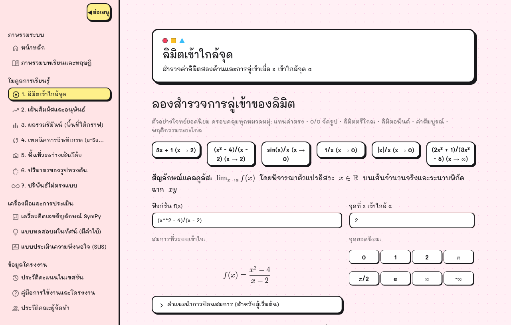
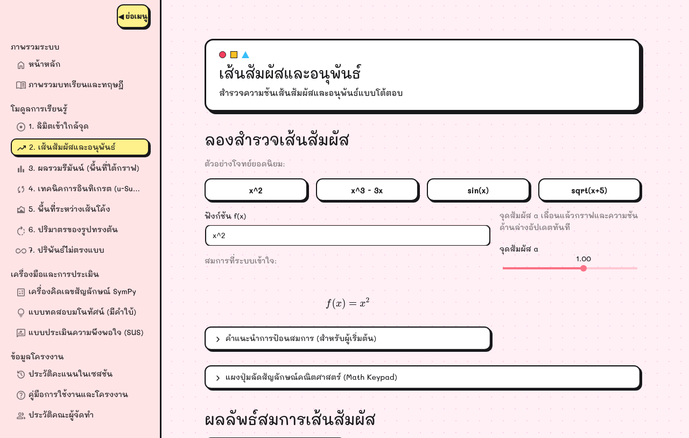
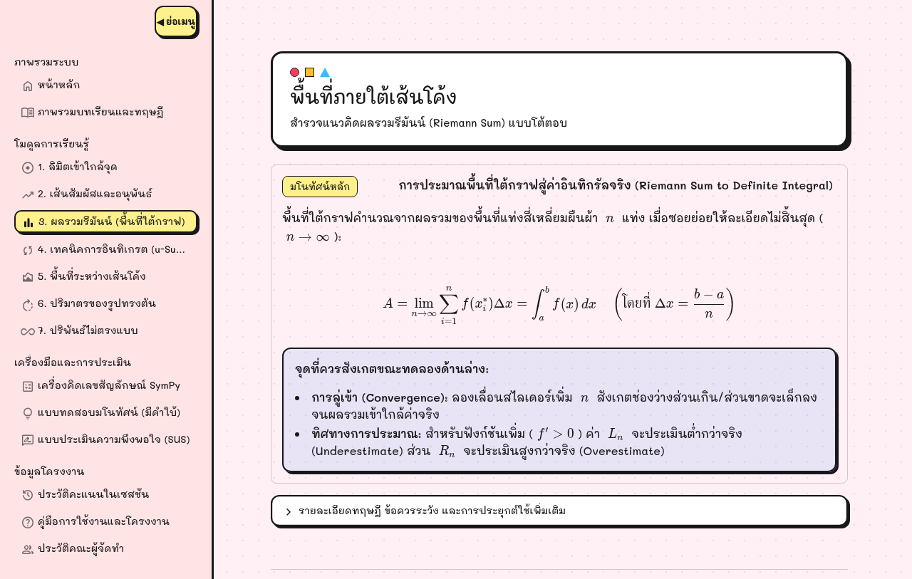
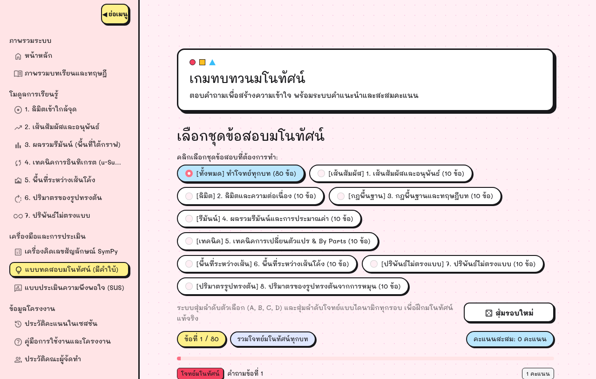

การพัฒนาเว็บแอปพลิเคชันช่วยเรียนคณิตศาสตร์
สำหรับแคลคูลัสเบื้องต้น
จากมโนทัศน์ที่มองไม่เห็น สู่การทดลองที่จับต้องได้
นิสิตสาขาวิชาคณิตศาสตร์ประยุกต์
อาจารย์กิตติพงศ์ ทรัพย์วัฒนาชัย
วิทยาการคำนวณและเทคโนโลยีดิจิทัล
คณะศิลปศาสตร์และวิทยาศาสตร์
ขอบเขตการนำเสนอ ปัญหามโนทัศน์ → กลไกการสอนที่ออกแบบ → หลักฐานเชิงประจักษ์ → ข้อจำกัดและแนวทางต่อยอด
รูปแบบยังไม่กำหนด $\frac{0}{0}$ ถูกสอนให้ "แยกตัวประกอบแล้วแทนค่า" แต่ผู้เรียนไม่เคยเห็นว่าค่าลู่เข้า 4 จริงหรือไม่
เส้นตัดกลายเป็นเส้นสัมผัสในจังหวะใด คำว่า $h\to 0$ เป็นนามธรรม ที่ไม่มีภาพรองรับในหนังสือเรียน
ผลบวกของสี่เหลี่ยมผืนผ้ากลายเป็นพื้นที่ใต้เส้นโค้งได้อย่างไร ตัวเชื่อมคือการลู่เข้า ไม่ใช่สูตร
ปัญหาไม่ใช่ "ผู้เรียนคำนวณไม่เป็น" แต่คือ ไม่มีเครื่องมือให้ทดลองปรับค่าและเห็นผลทันที จนเกิดภาพในหัว (Concept Image) ที่ตรงกับนิยาม (Concept Definition)
| ประเภทเครื่องมือ | สิ่งที่ทำได้ | สิ่งที่ยังขาด | ผลต่อการเกิดมโนทัศน์ |
|---|---|---|---|
| AI สร้างข้อความ ChatGPT, Gemini |
ตอบคำถามและแสดงวิธีทำได้ทันที | ไม่มีที่ให้ทดลอง และคำตอบมาจากความน่าจะเป็นของภาษา | ผู้เรียนอ่านคำตอบ ไม่ได้สร้างความเข้าใจ |
| โปรแกรมคำนวณสำเร็จรูป WolframAlpha |
คำนวณเชิงสัญลักษณ์ได้ถูกต้อง | ขั้นตอนละเอียดต้องจ่ายเงิน และไม่มีระบบจับจุดเข้าใจผิด | ได้คำตอบ แต่ไม่เห็นเหตุผลระหว่างทาง |
| โปรแกรมวาดกราฟ GeoGebra, Desmos |
กราฟพลวัตที่ปรับค่าได้อิสระ | ไม่มีโจทย์ ไม่มีเฉลย ไม่มีการชี้จุดที่มักเข้าใจผิด | เป็นกระดานทดลอง ไม่ใช่บทเรียน |
| ระบบที่นำเสนอ | ทดลองปรับค่า + เห็นกราฟ + เห็นวิธีทำทีละขั้น + คำใบ้ | จำกัดขอบเขตฟังก์ชันมูลฐาน (ระบุในข้อจำกัด) | เห็นภาพ → เข้าใจขั้นตอน → ตรวจสอบตนเอง |
ช่องว่างจึงไม่ใช่เรื่อง "ความสามารถของเครื่องมือ" แต่เป็นเรื่อง การจัดลำดับความช่วยเหลือ (Scaffolding) ที่พาผู้เรียนจาก "ดู" ไปสู่ "ทำเอง" อย่างเป็นขั้น
ขอบเขตที่จำกัดโดยเจตนา: รองรับฟังก์ชันมูลฐาน, ปริมาตรหมุนรอบแกน $x$ เท่านั้น
ปรับค่าได้ด้วยสไลเดอร์และเห็นกราฟเปลี่ยนทันที
วิธีทำทีละขั้นตามสัญญาข้อมูลเดียวกันทุกโมดูล
แบบทดสอบที่มีคำใบ้ ไม่บอกคำตอบทันที
แจ้งเตือน $ rac{0}{0}$, จุดโปร่ง, จุดมุมแหลม, จุดเอกฐาน
ถ้ามีแต่กราฟ ผู้เรียนได้แค่ภาพ แต่ไม่รู้ว่าเขียนอย่างไร · ถ้ามีแต่เฉลย ผู้เรียนได้แค่คำตอบ แต่ไม่เห็นว่าตัวเองเข้าใจผิดตรงไหน · การมีทั้งสี่ระดับคือการออกแบบให้ผู้เรียน ตรวจสอบตนเองได้ ไม่ใช่รอผู้สอนบอก
เตรียมตัว: เปิดแอปทิ้งไว้ก่อนเข้าห้อง 10 นาที เพราะ Streamlit Cloud ใช้เวลาปลุกครั้งแรก 40–60 วินาที หากไม่มีอินเทอร์เน็ต ให้ใช้สกรีนช็อตทั้งสี่ภาพด้านขวาแทนได้ทันที




| $n$ | ผลรวมซ้าย $L_n$ | คลาดเคลื่อน | ผลรวมขวา $R_n$ | คลาดเคลื่อน | จุดกึ่งกลาง $M_n$ | คลาดเคลื่อน |
|---|---|---|---|---|---|---|
| 4 | 1.7500 | -34.38% | 3.7500 | +40.63% | 2.6250 | -1.56% |
| 10 | 2.2800 | -14.50% | 3.0800 | +15.50% | 2.6600 | -0.25% |
| 20 | 2.4700 | -7.38% | 2.8700 | +7.63% | 2.6650 | -0.06% |
| 50 | 2.5872 | -2.98% | 2.7472 | +3.02% | 2.6664 | -0.01% |
| 100 | 2.6268 | -1.50% | 2.7068 | +1.50% | 2.6666 | < 0.01% |
ค่าปริพันธ์จริง $\int_0^2 x^2\,dx = \frac{8}{3} \approx 2.6667$ และทั้งสามวิธีลู่เข้าสู่ค่านี้
ทั้งสามวิธีลู่เข้า $\frac{8}{3}$ เมื่อ $n$ เพิ่มขึ้น ยืนยันว่าอัลกอริทึมสอดคล้องนิยามของปริพันธ์จริง
ผู้เรียนเห็นความคลาดเคลื่อนลดลงเป็นลำดับ คือทฤษฎีบทหลักมูลในรูปที่จับต้องได้
ผลลัพธ์คงรูปเศษส่วนและค่าคงตัว ไม่แปลงเป็นทศนิยม จึงไม่เกิดความคลาดเคลื่อนสะสมจากการปัดเศษ
ไม่ใช่ $1.333$ และไม่ใช่ $1.33$
สำหรับสื่อการเรียนรู้คณิตศาสตร์ การตอบผิดอย่างมั่นใจเป็นอันตรายกว่าการยอมรับว่าทำไม่ได้ ระบบจึงออกแบบให้ยอมแพ้อย่างชัดเจนเมื่ออยู่นอกขอบเขตที่พิสูจน์แล้ว
กรณีทดสอบอัตโนมัติครอบคลุม Solver ทั้ง 8 โมดูล ผ่านทั้งหมด
กรณีขอบเขตวิกฤต เพื่อจำแนกว่าอะไรรองรับ และอะไรถูกปฏิเสธ
ทดสอบเสมือนจริงบนเบราว์เซอร์ ไม่พบ JavaScript error
การทดสอบผ่านพิสูจน์ว่า กรณีที่ประกาศรองรับทำงานถูกต้อง และ กรณีที่อยู่นอกรองรับถูกปฏิเสธอย่างชัดเจน แต่ไม่ได้พิสูจน์ว่าถูกต้องสำหรับทุกอินพุตที่เป็นไปได้ เราจึงไม่กล่าวอ้างความถูกต้องแบบสากล
บันทึกผล ณ วันที่ 30 ตุลาคม 2569 เวลา 10:15 น. รวม $N = 50$ คน (แบบประเมินยังเปิดรับอยู่หลังวันตัดรอบ)
ชุดที่ 1 · ความพึงพอใจ 4 ด้าน
มาตรประมาณค่า 5 ระดับ รวม 20 ข้อ ครอบคลุม UI/UX, ฟังก์ชันเชิงโต้ตอบ,
เนื้อหาและมโนทัศน์, เจตคติและแรงจูงใจ
ชุดที่ 2 · System Usability Scale
10 ข้อ ฉบับปรับปรุงข้อคำถามเป็นเชิงบวก (Positive-phrased SUS)
ตามกรอบของ Sauro & Lewis (2011) เพื่อลดความสับสนของผู้ตอบไทย
การเลือกกลุ่มตัวอย่างเป็นแบบบังเอิญ (Convenience Sampling) จากเครือข่ายของผู้จัดทำ ซึ่งเป็นข้อจำกัดที่ระบุไว้ในบทที่ 5
| ด้านการประเมิน | $\bar{x}$ | $S.D.$ | ระดับ |
|---|---|---|---|
| 1. การออกแบบส่วนประสานงาน (UI/UX) | 4.62 | 0.60 | มากที่สุด |
| 2. ฟังก์ชันเชิงโต้ตอบและการคำนวณ | 4.60 | 0.61 | มากที่สุด |
| 3. เนื้อหาและมโนทัศน์ทางคณิตศาสตร์ | 4.64 | 0.56 | มากที่สุด |
| 4. เจตคติและแรงจูงใจในการเรียนรู้ | 4.67 | 0.56 | มากที่สุด |
| ภาพรวมทุกด้าน | 4.63 | 0.58 | มากที่สุด |
คะแนนสูงสุดคือด้าน เจตคติและแรงจูงใจ ซึ่งสอดคล้องกับสมมติฐานว่า การเห็นภาพและการทดลองลดความวิตกกังวลต่อวิชาแคลคูลัส
แต่คะแนนนี้คือ การรับรู้ของผู้เรียน (Perceived) ไม่ใช่หลักฐานว่าผลสัมฤทธิ์ทางการเรียนสูงขึ้น ซึ่งต้องใช้การทดสอบก่อนและหลังเรียนจึงจะสรุปได้
$S.D. = 19.36$ · มัธยฐาน 87.50 · เกณฑ์มาตรฐานอุตสาหกรรม 68.0
จัดอยู่ในเกณฑ์ยอดเยี่ยม Grade A (Brooke, 1996; Sauro, 2011)
เรารายงานทั้งสองค่า เพราะการรายงานเฉพาะ 82.15 จะทำให้ผลดูดีเกินจริง และปิดบังพฤติกรรมการตอบของผู้ใช้
| ข้อกังวล | คำตอบเชิงออกแบบ | เหตุผล |
|---|---|---|
| โดเมนเว็บไซต์ดูน่ากังวล | ติดตั้งบน Streamlit Community Cloud ที่เข้ารหัส HTTPS ตลอดเวลา และผูกโดเมนย่อยของมหาวิทยาลัยได้ | ข้อจำกัดของแพลตฟอร์มฟรี ไม่ใช่ช่องโหว่ของระบบ |
| ตัวหนังสือเยอะ อยากเห็นคำตอบก่อน | ยืนยันว่าระบบเป็นห้องทดลองการเรียนรู้ ไม่ใช่เครื่องเฉลย | การตัดขั้นตอนออกจะทำลายกลไกนั่งร้านทางปัญญาที่เป็นหัวใจของโครงงาน |
| โทนสีดูไม่เป็นทางการ | เลือกสไตล์ Playful Bauhaus Pop โดยเจตนา | เพื่อลดความวิตกกังวลต่อวิชาคณิตศาสตร์ สอดคล้องกับคะแนนด้านเจตคติ 4.67 |
| เหมาะกับคอมพิวเตอร์มากกว่ามือถือ | ระบุอุปกรณ์ที่แนะนำ และวางแผนปรับ Auto-scroll ในอนาคต | การเรียนรู้ที่ต้องเทียบสมการกับกราฟพร้อมกันต้องใช้พื้นที่หน้าจอ |
เราเลือกตอบข้อกังวลด้วยเหตุผลการออกแบบ ไม่ใช่การแก้ตามเสียงส่วนใหญ่ทุกข้อ เพราะบางข้อขัดกับวัตถุประสงค์ทาง pedagogy ของโครงงาน
| หัวข้อที่ต้องการให้พัฒนาเพิ่ม | จำนวน | ร้อยละ |
|---|---|---|
| การอินทิเกรตทีละส่วน (Integration by Parts) | 29 | 58.0% |
| การแยกเป็นเศษส่วนย่อย (Partial Fractions) | 25 | 50.0% |
| การแทนค่าด้วยฟังก์ชันตรีโกณมิติ (Trig Sub) | 22 | 44.0% |
| การจำลอง 3 มิติสำหรับปริมาตรการหมุน | 21 | 42.0% |
ตัวเลขนี้เป็น สัญญาณความต้องการ ไม่ใช่ข้อบกพร่องของระบบ ผู้เรียนที่ผ่านการใช้งานแล้วอยากได้หัวข้อที่ต่อเนื่องขึ้น ซึ่งแปลว่าระบบถูกใช้จนถึงขีดจำกัดของขอบเขตที่ประกาศไว้
จึงนำตัวเลขนี้ไปเขียนเป็นข้อเสนอแนะในบทที่ 5 โดยเรียงตามลำดับความต้องการจริงของผู้ใช้ ไม่ใช่ตามความสะดวกของผู้พัฒนา
| ขั้น | สิ่งที่ระบบจัดให้ |
|---|---|
| Action | ผู้เรียนลากสไลเดอร์ ป้อนฟังก์ชัน เห็นผลทันที |
| Process | เห็นรูปแบบซ้ำ ๆ ว่าค่า $h$ เล็กลงทำให้ความชันลู่เข้า |
| Object | เข้าใจอนุพันธ์ในฐานะฟังก์ชัน ไม่ใช่การคำนวณครั้งเดียว |
| Schema | เชื่อมลิมิต อนุพันธ์ และปริพันธ์เป็นโครงเดียวกัน |
ตำราอธิบายนิยามได้ครบ แต่ไม่มีที่ให้ผู้เรียน ทดลองปรับตัวแปรแล้วล้มเหลวอย่างปลอดภัย ซึ่งเป็นกลไกที่ทำให้ Concept Image ค่อย ๆ ขยับเข้าหา Concept Definition (Tall & Vinner, 1981)
นี่คือคำตอบว่าทำไมเครื่องมือที่ "ตอบถูก" ยังไม่พอ เพราะสิ่งที่ขาดไม่ใช่คำตอบ แต่คือ พื้นที่ให้คิดก่อนได้คำตอบ
ข้อจำกัดเหล่านี้ถูกออกแบบให้ ตรวจพบและแจ้งเตือนได้ ไม่ใช่ปล่อยให้ผู้เรียนเข้าใจผิดโดยไม่รู้ตัว การรู้ว่าอะไรทำไม่ได้คือส่วนหนึ่งของความน่าเชื่อถือของเครื่องมือการสอน
ลำดับความสำคัญอ้างอิงจากความต้องการจริงของผู้เรียน ($N=50$) ไม่ใช่จากความยากง่ายของการพัฒนา
| วัตถุประสงค์ | ผลที่ได้ | หลักฐาน |
|---|---|---|
| 1. พัฒนาเว็บแอปพลิเคชันด้วย Python และ Streamlit | ระบบ 15 หน้า ใช้งานได้จริงบนคลาวด์ | ลิงก์แอปสาธารณะ |
| 2. รวบรวมเนื้อหาและแบบฝึกหัด 7 โมดูล | ครบ 7 โมดูล + Solver + ข้อสอบ 80 ข้อ | บทที่ 3, ภาคผนวก ข |
| 3. ระบบคำนวณเชิงสัญลักษณ์ที่ถูกต้อง | 250 กรณีทดสอบผ่านทั้งหมด คงรูปเศษส่วนแท้ | บทที่ 4 ตาราง 4.1 |
| 4. กลไกป้องกันจุดเข้าใจผิด | Fail-safe 4 กรณี ตรวจจุดโปร่ง จุดมุมแหลม จุดเอกฐาน | ตาราง 4.3 |
| 5. ประเมินความพึงพอใจและความสะดวก | $\bar{x}=4.63/5.00$ และ SUS 82.15 (Grade A) | ตาราง 4.5, §4.3.2 |
สรุปเชิงแนวคิด: ระบบนี้ไม่ได้ทำให้ผู้เรียนคำนวณเร็วขึ้น แต่ทำให้ ช่วงเวลาก่อนได้คำตอบ กลายเป็นส่วนหนึ่งของการเรียนรู้
250 กรณี พร้อมใช้ต่อยอดเมื่อเพิ่มโมดูลใหม่
$N=50$ พร้อมตารางสถิติที่ตรวจสอบย้อนกลับได้
สิ่งที่ยังต้องทำต่อ: เพิ่มหัวข้อตามความต้องการของผู้เรียน, ปรับการแสดงผลภาษาไทย, และเชื่อมระบบเก็บข้อมูลการเรียนรู้เพื่อวัดผลสัมฤทธิ์อย่างเป็นระบบ
พร้อมรับฟังข้อซักถามและข้อเสนอแนะ
บทที่ 1–5, บรรณานุกรม และภาคผนวก ก–จ
เวลาซักถามและตอบข้อเสนอแนะ ไม่น้อยกว่า 10 นาที